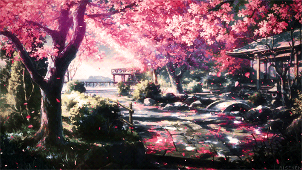
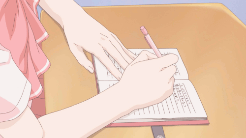

Realitatea dorită (Desired reality), cunoscută și sub numele de DR, este realitatea ideală a unui călător între realități.
Realitatea curentă (Current reality), cunoscută și sub numele de CR sau RA, este realitatea actuală în care te afli chiar acum.
O cameră de așteptare (WR) este o realitate care poate fi puntea dintre realitatea ta actuală și realitatea ta dorită.
Un TR este o realitate în care un călător între realități se mută pentru o perioadă de timp.
Clonele sunt alte versiuni ale sinelui tău, care totuși sunt tot tu.
Efectul Mandela este o eroare în realitate și un efect secundar al shiftingului care apare după ce a avut loc o schimbare.
Respawnarea este actul de reîncarnare completă și trecerea permanentă în realitatea ta dorită.
După ce shiftingul a devenit popular, mulți oameni au avut temeri legate de întregul proces.
Respawnarea este foarte similară cu shiftingul, doar că implică un pas suplimentar.
Poți să scrii sau să intenționezi că vei uita de CR.
Poți vizualiza un fir care te leagă de CR și apoi să-l tai.
Pur și simplu scrie că nu poți să te mai întorci niciodată la CR.
Setează intenția că nu te poți mai întoarce.

Scriptingul este actul de a scrie scenariul realității tale ideale, cum îți dorești să fie, unde vrei să trăiești,
contextul, numele, vârsta și alte detalii importante.
Scriptingul este, desigur, opțional.
Poți scrie oriunde: pe hârtie, într-un jurnal, pe Wattpad, pe Google Drive, în Word sau Notes.